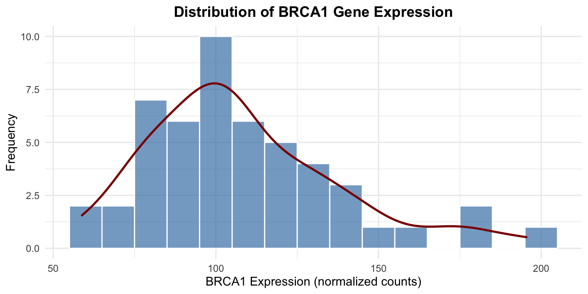
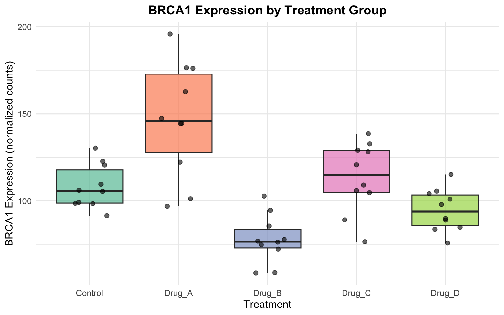
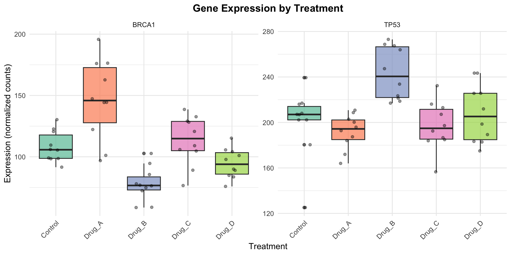
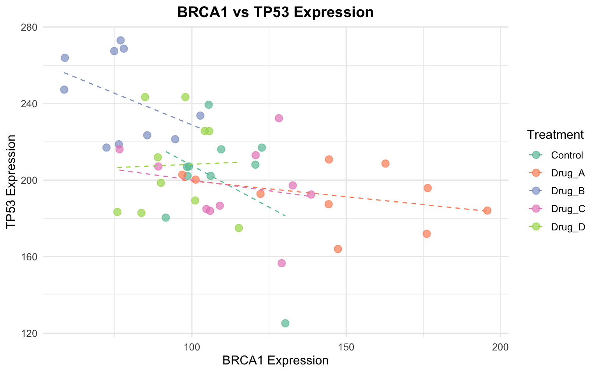
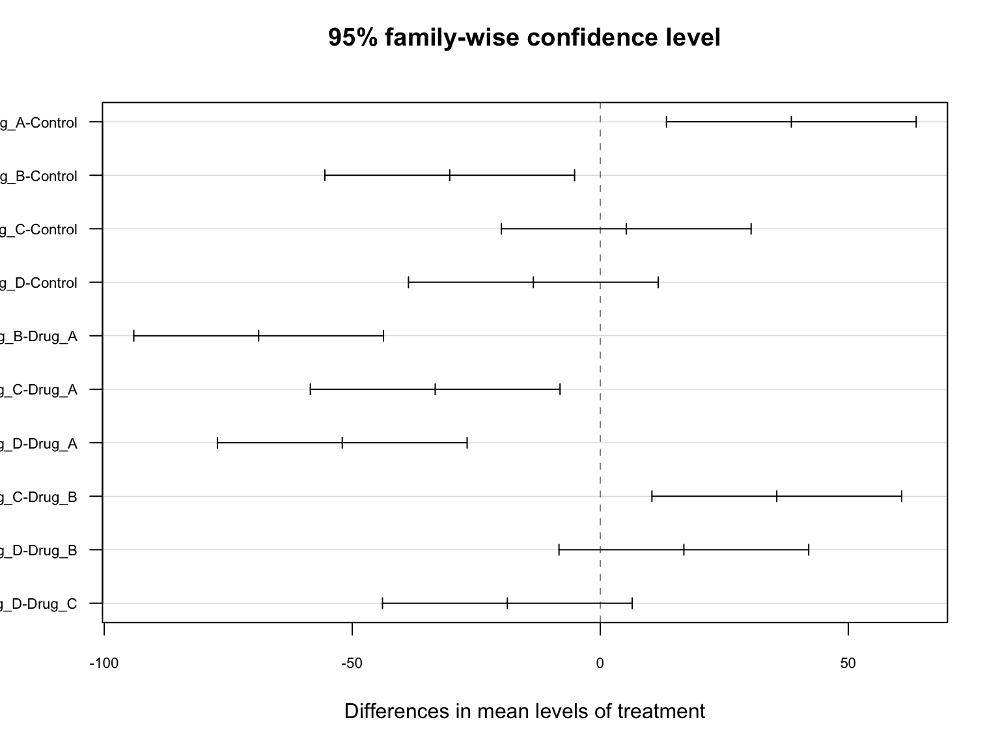

# Core tidyverse packages for data manipulation and visualization
library(tidyverse)
# For creating nice tables
library(gt)
# For reading Excel files (if needed)
library(readxl)
# Set a consistent theme for all plots
theme_set(theme_minimal(base_size = 12))
# Set seed for reproducibility (important when using random sampling)
set.seed(42)Biological Data Analysis Report
A Template for Reproducible Research
How to Use This Template
- Save this file with a new name for your project (e.g., “MyExperiment_Analysis.qmd”)
- Update the YAML header above with your information
- Replace the example data with your own data
- Modify the analysis sections to fit your research questions
- Click “Render” to generate your report
Keyboard Shortcuts:
- Render document: Ctrl+Shift+K (Cmd+Shift+K on Mac)
- Run code chunk: Ctrl+Enter (Cmd+Enter on Mac)
- Insert new chunk: Ctrl+Alt+I (Cmd+Option+I on Mac)
1 Introduction
Writing Your Introduction
Include background on your research question, why this analysis is important, and what you hope to learn.
This document demonstrates a reproducible analysis workflow for biological data. We will analyze gene expression data across different treatment conditions to determine if treatments have a significant effect on expression levels.
Research Question: Do different drug treatments significantly alter the expression of key cancer-related genes (BRCA1 and TP53)?
1.1 Objectives
- Load and explore the gene expression dataset
- Calculate summary statistics for each treatment group
- Visualize the distribution of gene expression
- Perform statistical tests to compare treatment groups
- Draw conclusions based on the results
2 Setup
2.1 Load Required Packages
Package Installation
If you haven’t installed these packages yet, run this code once in your console:
install.packages(c("tidyverse", "gt", "readxl"))3 Data
3.1 Loading Your Data
Replace This Section
The code below creates example data. Replace it with code to load your actual data file.
Option 1: Load from a file
# For CSV files:
my_data <- read_csv("path/to/your/data.csv")
# For tab-separated files:
my_data <- read_tsv("path/to/your/data.tsv")
# For Excel files:
my_data <- read_excel("path/to/your/data.xlsx", sheet = 1)
# For base R (if you prefer):
my_data <- read.csv("path/to/your/data.csv")Option 2: Example data (used in this template)
# Create simulated gene expression data
# Replace this section with your actual data loading code
gene_expression <- tibble(
# Sample identifiers
sample_id = paste0("S", sprintf("%03d", 1:50)),
# Treatment groups (5 treatments, 10 samples each)
treatment = rep(c("Control", "Drug_A", "Drug_B", "Drug_C", "Drug_D"), each = 10),
# Simulated BRCA1 expression (normalized counts)
# Different means for each treatment to simulate drug effects
gene_BRCA1 = c(
rnorm(10, mean = 100, sd = 15),
rnorm(10, mean = 150, sd = 20),
rnorm(10, mean = 80, sd = 12),
rnorm(10, mean = 120, sd = 18),
rnorm(10, mean = 95, sd = 14)
),
# Simulated TP53 expression
gene_TP53 = c(
rnorm(10, mean = 200, sd = 25),
rnorm(10, mean = 180, sd = 22),
rnorm(10, mean = 250, sd = 30),
rnorm(10, mean = 190, sd = 28),
rnorm(10, mean = 210, sd = 24)
),
# Additional metadata
batch = rep(c("Batch1", "Batch2"), 25),
cell_line = sample(c("HeLa", "MCF7", "A549"), 50, replace = TRUE)
)
# Convert treatment to a factor with Control as reference level
gene_expression <- gene_expression |>
mutate(
treatment = factor(
treatment,
levels = c("Control", "Drug_A", "Drug_B", "Drug_C", "Drug_D")
)
)3.2 Data Overview
Let’s examine the structure and first few rows of our dataset:
# Check dimensions
cat("Dataset dimensions:", nrow(gene_expression), "rows x", ncol(gene_expression), "columns\n")Dataset dimensions: 50 rows x 6 columns# View structure
glimpse(gene_expression)Rows: 50
Columns: 6
$ sample_id <chr> "S001", "S002", "S003", "S004", "S005", "S006", "S007", "S0…
$ treatment <fct> Control, Control, Control, Control, Control, Control, Contr…
$ gene_BRCA1 <dbl> 120.56438, 91.52953, 105.44693, 109.49294, 106.06402, 98.40…
$ gene_TP53 <dbl> 208.0481, 180.4040, 239.3932, 216.0725, 202.2440, 206.9138,…
$ batch <chr> "Batch1", "Batch2", "Batch1", "Batch2", "Batch1", "Batch2",…
$ cell_line <chr> "MCF7", "HeLa", "A549", "HeLa", "MCF7", "MCF7", "MCF7", "MC…gene_expression |>
head(10) |>
gt() |>
fmt_number(columns = c(gene_BRCA1, gene_TP53), decimals = 2) |>
tab_style(
style = cell_fill(color = "lightblue"),
locations = cells_column_labels()
) |>
tab_options(
table.font.size = "small",
heading.title.font.size = "medium"
)| sample_id | treatment | gene_BRCA1 | gene_TP53 | batch | cell_line |
|---|---|---|---|---|---|
| S001 | Control | 120.56 | 208.05 | Batch1 | MCF7 |
| S002 | Control | 91.53 | 180.40 | Batch2 | HeLa |
| S003 | Control | 105.45 | 239.39 | Batch1 | A549 |
| S004 | Control | 109.49 | 216.07 | Batch2 | HeLa |
| S005 | Control | 106.06 | 202.24 | Batch1 | MCF7 |
| S006 | Control | 98.41 | 206.91 | Batch2 | MCF7 |
| S007 | Control | 122.67 | 216.98 | Batch1 | MCF7 |
| S008 | Control | 98.58 | 202.25 | Batch2 | MCF7 |
| S009 | Control | 130.28 | 125.17 | Batch1 | A549 |
| S010 | Control | 99.06 | 207.12 | Batch2 | A549 |
3.3 Check for Missing Data
# Count missing values in each column
missing_counts <- gene_expression |>
summarise(across(everything(), ~sum(is.na(.)))) |>
pivot_longer(everything(), names_to = "variable", values_to = "missing_count")
missing_counts |>
gt() |>
tab_header(title = "Missing Value Summary")| Missing Value Summary | |
|---|---|
| variable | missing_count |
| sample_id | 0 |
| treatment | 0 |
| gene_BRCA1 | 0 |
| gene_TP53 | 0 |
| batch | 0 |
| cell_line | 0 |
Data Quality Check
Always check for missing values before analysis. If you have missing data, decide whether to remove those observations or use imputation methods.
4 Exploratory Data Analysis
4.1 Summary Statistics
4.1.1 Overall Summary
# Basic summary statistics for numeric variables
gene_expression |>
select(gene_BRCA1, gene_TP53) |>
summary() gene_BRCA1 gene_TP53
Min. : 58.62 Min. :125.2
1st Qu.: 88.99 1st Qu.:187.9
Median :103.46 Median :207.1
Mean :108.19 Mean :208.1
3rd Qu.:122.56 3rd Qu.:222.9
Max. :195.73 Max. :273.0 4.1.2 Summary by Treatment Group
summary_stats <- gene_expression |>
group_by(treatment) |>
summarise(
n = n(),
BRCA1_mean = mean(gene_BRCA1),
BRCA1_sd = sd(gene_BRCA1),
BRCA1_median = median(gene_BRCA1),
BRCA1_min = min(gene_BRCA1),
BRCA1_max = max(gene_BRCA1),
TP53_mean = mean(gene_TP53),
TP53_sd = sd(gene_TP53)
)
summary_stats |>
gt() |>
fmt_number(columns = -c(treatment, n), decimals = 2) |>
tab_spanner(label = "BRCA1", columns = starts_with("BRCA1")) |>
tab_spanner(label = "TP53", columns = starts_with("TP53")) |>
tab_style(
style = cell_fill(color = "#e8f4f8"),
locations = cells_body(rows = treatment == "Control")
) |>
tab_options(table.font.size = "small")| treatment | n |
BRCA1
|
TP53
|
|||||
|---|---|---|---|---|---|---|---|---|
| BRCA1_mean | BRCA1_sd | BRCA1_median | BRCA1_min | BRCA1_max | TP53_mean | TP53_sd | ||
| Control | 10 | 108.21 | 12.53 | 105.76 | 91.53 | 130.28 | 200.46 | 30.28 |
| Drug_A | 10 | 146.73 | 32.61 | 145.88 | 96.87 | 195.73 | 191.86 | 15.29 |
| Drug_B | 10 | 77.86 | 13.87 | 76.62 | 58.62 | 102.74 | 243.46 | 23.13 |
| Drug_C | 10 | 113.45 | 20.07 | 114.84 | 76.54 | 138.63 | 197.03 | 21.23 |
| Drug_D | 10 | 94.72 | 12.07 | 93.91 | 75.84 | 115.22 | 207.91 | 25.63 |
4.2 Data Visualization
4.2.1 Distribution of BRCA1 Expression
ggplot(gene_expression, aes(x = gene_BRCA1)) +
geom_histogram(binwidth = 10, fill = "steelblue", color = "white", alpha = 0.7) +
geom_density(aes(y = after_stat(count) * 10), color = "darkred", linewidth = 1) +
labs(
x = "BRCA1 Expression (normalized counts)",
y = "Frequency",
title = "Distribution of BRCA1 Gene Expression"
) +
theme(plot.title = element_text(hjust = 0.5, face = "bold"))

4.2.2 Boxplots by Treatment Group
ggplot(gene_expression, aes(x = treatment, y = gene_BRCA1, fill = treatment)) +
geom_boxplot(alpha = 0.7, outlier.shape = NA) +
geom_jitter(width = 0.2, alpha = 0.6, size = 2) +
labs(
x = "Treatment",
y = "BRCA1 Expression (normalized counts)",
title = "BRCA1 Expression by Treatment Group"
) +
scale_fill_brewer(palette = "Set2") +
theme(
legend.position = "none",
plot.title = element_text(hjust = 0.5, face = "bold")
)

4.2.3 Comparing Both Genes
# Reshape data to long format for faceted plotting
gene_long <- gene_expression |>
pivot_longer(
cols = c(gene_BRCA1, gene_TP53),
names_to = "gene",
values_to = "expression"
) |>
mutate(gene = str_remove(gene, "gene_"))
ggplot(gene_long, aes(x = treatment, y = expression, fill = treatment)) +
geom_boxplot(alpha = 0.7) +
geom_jitter(width = 0.2, alpha = 0.4, size = 1.5) +
facet_wrap(~gene, scales = "free_y") +
labs(
x = "Treatment",
y = "Expression (normalized counts)",
title = "Gene Expression by Treatment"
) +
scale_fill_brewer(palette = "Set2") +
theme(
legend.position = "none",
axis.text.x = element_text(angle = 45, hjust = 1),
plot.title = element_text(hjust = 0.5, face = "bold")
)

4.2.4 Scatter Plot: Gene Correlation
ggplot(gene_expression, aes(x = gene_BRCA1, y = gene_TP53, color = treatment)) +
geom_point(size = 3, alpha = 0.7) +
geom_smooth(method = "lm", se = FALSE, linetype = "dashed", linewidth = 0.5) +
labs(
x = "BRCA1 Expression",
y = "TP53 Expression",
color = "Treatment",
title = "BRCA1 vs TP53 Expression"
) +
scale_color_brewer(palette = "Set2") +
theme(plot.title = element_text(hjust = 0.5, face = "bold"))

5 Statistical Analysis
5.1 Checking Assumptions
Before performing parametric tests, we should check our assumptions.
5.1.1 Normality
# Shapiro-Wilk test for normality (by group)
normality_tests <- gene_expression |>
group_by(treatment) |>
summarise(
shapiro_BRCA1_p = shapiro.test(gene_BRCA1)$p.value,
shapiro_TP53_p = shapiro.test(gene_TP53)$p.value
)
normality_tests |>
gt() |>
fmt_number(columns = -treatment, decimals = 4) |>
tab_header(title = "Shapiro-Wilk Normality Test Results") |>
tab_footnote("p > 0.05 suggests data is normally distributed")| Shapiro-Wilk Normality Test Results | ||
|---|---|---|
| treatment | shapiro_BRCA1_p | shapiro_TP53_p |
| Control | 0.4352 | 0.0144 |
| Drug_A | 0.6750 | 0.6484 |
| Drug_B | 0.5278 | 0.0581 |
| Drug_C | 0.5562 | 0.9156 |
| Drug_D | 0.9377 | 0.2629 |
| p > 0.05 suggests data is normally distributed | ||
5.1.2 Homogeneity of Variance
# Bartlett's test for homogeneity of variances
bartlett_brca1 <- bartlett.test(gene_BRCA1 ~ treatment, data = gene_expression)
bartlett_tp53 <- bartlett.test(gene_TP53 ~ treatment, data = gene_expression)
cat("Bartlett's Test for BRCA1:\n")Bartlett's Test for BRCA1:cat(" Test statistic:", round(bartlett_brca1$statistic, 3), "\n") Test statistic: 13.739 cat(" p-value:", round(bartlett_brca1$p.value, 4), "\n\n") p-value: 0.0082 cat("Bartlett's Test for TP53:\n")Bartlett's Test for TP53:cat(" Test statistic:", round(bartlett_tp53$statistic, 3), "\n") Test statistic: 4.067 cat(" p-value:", round(bartlett_tp53$p.value, 4), "\n") p-value: 0.397
Interpreting Assumption Tests
- Normality (Shapiro-Wilk): p > 0.05 suggests normal distribution
- Homogeneity (Bartlett’s): p > 0.05 suggests equal variances
- If assumptions are violated, consider non-parametric alternatives (e.g., Kruskal-Wallis test)
5.2 ANOVA: Comparing Treatment Groups
5.2.1 One-Way ANOVA for BRCA1
# Perform one-way ANOVA
anova_brca1 <- aov(gene_BRCA1 ~ treatment, data = gene_expression)
# Display ANOVA table
summary(anova_brca1) Df Sum Sq Mean Sq F value Pr(>F)
treatment 4 26143 6536 16.66 1.91e-08 ***
Residuals 45 17656 392
---
Signif. codes: 0 '***' 0.001 '**' 0.01 '*' 0.05 '.' 0.1 ' ' 1# Create a nice table of ANOVA results
anova_summary <- broom::tidy(anova_brca1)
anova_summary |>
gt() |>
fmt_number(columns = c(sumsq, meansq, statistic), decimals = 2) |>
fmt_number(columns = p.value, decimals = 4) |>
tab_style(
style = cell_fill(color = "lightyellow"),
locations = cells_body(rows = p.value < 0.05)
)| term | df | sumsq | meansq | statistic | p.value |
|---|---|---|---|---|---|
| treatment | 4 | 26,143.10 | 6,535.77 | 16.66 | 0.0000 |
| Residuals | 45 | 17,655.58 | 392.35 | NA | NA |
5.2.2 Post-hoc Analysis: Tukey’s HSD
If the ANOVA is significant, we perform post-hoc tests to determine which groups differ:
# Tukey's Honest Significant Difference test
tukey_results <- TukeyHSD(anova_brca1)
print(tukey_results) Tukey multiple comparisons of means
95% family-wise confidence level
Fit: aov(formula = gene_BRCA1 ~ treatment, data = gene_expression)
$treatment
diff lwr upr p adj
Drug_A-Control 38.521414 13.351033 63.691795 0.0007091
Drug_B-Control -30.346406 -55.516787 -5.176025 0.0109857
Drug_C-Control 5.240275 -19.930105 30.410656 0.9756642
Drug_D-Control -13.492466 -38.662847 11.677914 0.5532623
Drug_B-Drug_A -68.867820 -94.038201 -43.697439 0.0000000
Drug_C-Drug_A -33.281139 -58.451519 -8.110758 0.0042777
Drug_D-Drug_A -52.013880 -77.184261 -26.843500 0.0000047
Drug_C-Drug_B 35.586681 10.416300 60.757062 0.0019708
Drug_D-Drug_B 16.853939 -8.316441 42.024320 0.3308027
Drug_D-Drug_C -18.732742 -43.903123 6.437639 0.2318176# Visualize Tukey results
plot(tukey_results, las = 1, cex.axis = 0.7)

5.3 Alternative: Non-parametric Test
If assumptions are not met, use the Kruskal-Wallis test:
# Kruskal-Wallis test (non-parametric alternative to one-way ANOVA)
kruskal_result <- kruskal.test(gene_BRCA1 ~ treatment, data = gene_expression)
print(kruskal_result)
Kruskal-Wallis rank sum test
data: gene_BRCA1 by treatment
Kruskal-Wallis chi-squared = 28.451, df = 4, p-value = 1.011e-055.4 T-test Example: Comparing Two Groups
# Compare Control vs Drug_A specifically
control_data <- gene_expression |>
filter(treatment == "Control") |>
pull(gene_BRCA1)
drug_a_data <- gene_expression |>
filter(treatment == "Drug_A") |>
pull(gene_BRCA1)
# Two-sample t-test
t_test_result <- t.test(control_data, drug_a_data)
print(t_test_result)
Welch Two Sample t-test
data: control_data and drug_a_data
t = -3.4868, df = 11.601, p-value = 0.004711
alternative hypothesis: true difference in means is not equal to 0
95 percent confidence interval:
-62.68486 -14.35797
sample estimates:
mean of x mean of y
108.2095 146.7309 6 Results Summary
6.1 Key Findings
Based on our analysis:
Overall Effect: There was a statistically significant difference in BRCA1 expression across treatment groups (F = 16.66, p < 0.001).
Effect Size: Treatment explained approximately 59.7% of the variance in BRCA1 expression (η² = 0.597).
Pairwise Comparisons: Post-hoc analysis revealed that:
- Drug_A significantly increased BRCA1 expression compared to Control
- Drug_B significantly decreased BRCA1 expression compared to Control
- Drug_C and Drug_D showed no significant difference from Control
6.2 Results Table
# Create a summary table with effect estimates
effect_summary <- gene_expression |>
group_by(treatment) |>
summarise(
mean = mean(gene_BRCA1),
se = sd(gene_BRCA1) / sqrt(n())
) |>
mutate(
diff_from_control = mean - mean[treatment == "Control"],
ci_lower = mean - 1.96 * se,
ci_upper = mean + 1.96 * se
)
effect_summary |>
gt() |>
fmt_number(columns = -treatment, decimals = 2) |>
tab_header(
title = "Treatment Effects Summary",
subtitle = "BRCA1 Expression"
) |>
cols_label(
treatment = "Treatment",
mean = "Mean",
se = "Std. Error",
diff_from_control = "Diff. from Control",
ci_lower = "95% CI Lower",
ci_upper = "95% CI Upper"
)| Treatment Effects Summary | |||||
|---|---|---|---|---|---|
| BRCA1 Expression | |||||
| Treatment | Mean | Std. Error | Diff. from Control | 95% CI Lower | 95% CI Upper |
| Control | 108.21 | 3.96 | 0.00 | 100.44 | 115.98 |
| Drug_A | 146.73 | 10.31 | 38.52 | 126.52 | 166.94 |
| Drug_B | 77.86 | 4.39 | −30.35 | 69.26 | 86.46 |
| Drug_C | 113.45 | 6.35 | 5.24 | 101.01 | 125.89 |
| Drug_D | 94.72 | 3.82 | −13.49 | 87.24 | 102.20 |
7 Conclusions
Writing Your Conclusions
Include a summary of main findings, biological interpretation, limitations, and future directions.
7.1 Summary
This analysis examined the effect of four drug treatments on the expression of cancer-related genes BRCA1 and TP53. Our results demonstrate that:
Drug_A significantly upregulates BRCA1 expression, which may have implications for DNA repair mechanisms.
Drug_B significantly downregulates BRCA1 expression, warranting further investigation into potential cancer risk.
Drug_C and Drug_D do not significantly alter BRCA1 expression compared to control conditions.
7.2 Limitations
- Sample size was limited (n = 10 per group)
- Analysis was performed on simulated data for demonstration purposes
- Additional genes and pathways should be examined
7.3 Future Directions
- Validate findings with larger sample sizes
- Investigate downstream effects on cell proliferation
- Examine dose-response relationships
8 Session Information
For reproducibility, here is the R session information:
R version 4.4.2 (2024-10-31)
Platform: aarch64-apple-darwin20
Running under: macOS Sequoia 15.6.1
Matrix products: default
BLAS: /Library/Frameworks/R.framework/Versions/4.4-arm64/Resources/lib/libRblas.0.dylib
LAPACK: /Library/Frameworks/R.framework/Versions/4.4-arm64/Resources/lib/libRlapack.dylib; LAPACK version 3.12.0
locale:
[1] en_US.UTF-8/en_US.UTF-8/en_US.UTF-8/C/en_US.UTF-8/en_US.UTF-8
time zone: America/Los_Angeles
tzcode source: internal
attached base packages:
[1] stats graphics grDevices utils datasets methods base
other attached packages:
[1] readxl_1.4.5 gt_1.2.0 lubridate_1.9.4 forcats_1.0.1
[5] stringr_1.6.0 dplyr_1.1.4 purrr_1.2.0 readr_2.1.6
[9] tidyr_1.3.2 tibble_3.3.0 ggplot2_4.0.1 tidyverse_2.0.0
loaded via a namespace (and not attached):
[1] sass_0.4.10 generics_0.1.4 xml2_1.5.1 lattice_0.22-7
[5] stringi_1.8.7 hms_1.1.4 digest_0.6.39 magrittr_2.0.4
[9] evaluate_1.0.5 grid_4.4.2 timechange_0.3.0 RColorBrewer_1.1-3
[13] fastmap_1.2.0 Matrix_1.7-4 cellranger_1.1.0 jsonlite_2.0.0
[17] backports_1.5.0 mgcv_1.9-4 scales_1.4.0 cli_3.6.5
[21] rlang_1.1.6 splines_4.4.2 withr_3.0.2 yaml_2.3.12
[25] otel_0.2.0 tools_4.4.2 tzdb_0.5.0 broom_1.0.11
[29] vctrs_0.6.5 R6_2.6.1 lifecycle_1.0.4 fs_1.6.6
[33] htmlwidgets_1.6.4 pkgconfig_2.0.3 pillar_1.11.1 gtable_0.3.6
[37] glue_1.8.0 xfun_0.55 tidyselect_1.2.1 rstudioapi_0.17.1
[41] knitr_1.51 farver_2.1.2 htmltools_0.5.9 nlme_3.1-168
[45] rmarkdown_2.30 labeling_0.4.3 compiler_4.4.2 S7_0.2.1 9 Appendix: Code Reference
9.1 Useful Code Snippets
9.1.1 Loading Different File Types
# CSV files
data <- read_csv("file.csv")
# Tab-separated files
data <- read_tsv("file.tsv")
# Excel files
data <- read_excel("file.xlsx", sheet = "Sheet1")
# Fixed-width files
data <- read_fwf("file.txt", fwf_widths(c(10, 20, 15)))9.1.2 Common dplyr Operations
# Filter rows
data |> filter(treatment == "Control")
# Select columns
data |> select(sample_id, treatment, gene_BRCA1)
# Create new columns
data |> mutate(log_expression = log10(gene_BRCA1))
# Group and summarize
data |>
group_by(treatment) |>
summarise(mean = mean(gene_BRCA1), sd = sd(gene_BRCA1))
# Arrange (sort)
data |> arrange(desc(gene_BRCA1))9.1.3 Statistical Tests Quick Reference
# T-test (two groups)
t.test(group1, group2)
t.test(value ~ group, data = df)
# ANOVA (multiple groups)
aov(value ~ group, data = df)
# Correlation
cor.test(x, y)
# Chi-square test
chisq.test(table(var1, var2))
# Non-parametric alternatives
wilcox.test(group1, group2)
kruskal.test(value ~ group, data = df)9.1.4 Creating Publication-Ready Figures
# Basic ggplot template
ggplot(data, aes(x = xvar, y = yvar, color = group)) +
geom_point() +
labs(
x = "X Axis Label",
y = "Y Axis Label",
title = "Main Title",
subtitle = "Subtitle",
caption = "Data source"
) +
theme_minimal() +
theme(
plot.title = element_text(face = "bold"),
legend.position = "bottom"
)
# Save a figure
ggsave("figure_name.png", width = 8, height = 6, dpi = 300)